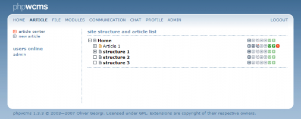
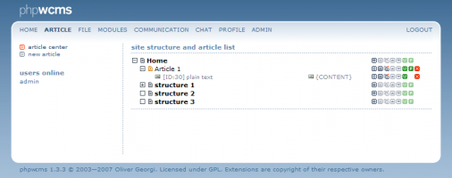

The primary navigation menu in he backend is the top bar, with addtional related items down the left. The first Item in the top menu is the "ARTICLE" area, you also will notice the two left menus, 'article center' & 'new article'. Article center shows you an overview of the sites structure (in bold font) and its article content (normal font). The order and placent or articles with the article center is controled using the icons to the right of each article (itemised below). please note: the order & placement of the site's structure may only be altered within the ADMIN section for management purposes.
The article center
|  |
The article center in the details
Starting from the article center you can't only get an overview of all but you can also create, copy or delete structure levels. Furthermore you can directly access content parts.
If you want to directly access content parts, click  that you can find in front of
that you can find in front of  . Then you can see an overview of all used content parts.
. Then you can see an overview of all used content parts.
|  |
Below the article you can now see a new level. A content part of the article is assigned to every line starting by  . After that the ID of the content part will be shown in brackets [ ], furthermore the type of the content part and finally with
. After that the ID of the content part will be shown in brackets [ ], furthermore the type of the content part and finally with  you can see in what area of the template the content will be displayed .
you can see in what area of the template the content will be displayed .
Field descriptions
The following icons may be found to the right of each category, article, content part and file center Item. Please note: if the icon appears less defined (greyed out) it is inactive for the current context.
|
||||||||||||||||||||||||||||||||||||||||||||||||||||||||||||


Article created: Friday, 13. August 2004
Last Changes: Tuesday, 4. January 2011
Last Changes: Tuesday, 4. January 2011